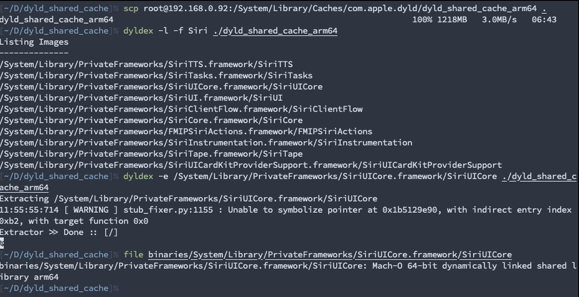

File Attributes in Fruity Devices
I wanted to spend some time looking around different file types in the Apple world, and this is what I've got.
Mach-O
Mach-O is the executable format used on macOS and iOS. In the Windows world this could be like a .exe file.
A Mach-O file contains a header comprised of a series of load commands – commands telling dyld information about the file. Some load commands specify metadata about the file, such as the version it is compiled for, or the file’s entry point.
The most important load commands define segments, which are the areas of the Mach-O file that are loaded into memory at a specified address. There are three common segments.
__TEXT- A read-only area containing executable code and constant data.
__DATA- A read/write area that contains the non-constant data for an executable.
__LINKEDIT- Contains raw data for the linker like symbols and string tables, compressed dynamic linking info, code signing info, and the indirect symbol table.
Each segment can also define sections, which further subdivides the segment into named parts. For example, the __DATA section includes sections such as __objc_classlist containing pointers to classes defined in the file.
Dyld
Dyld is the dynamic linker in macOS and iOS. In the Mach-O sections there are several items with the LC_LOAD_DYLIB load command. These typically point to frameworks such as WebKit and UIKit.
Unlike other operating systems, instead of including the system libraries with the OS, since iOS 3.1 and macOS BigSur, Apple includes a generated cache of all built in dynamic libraries and excludes the original libraries.
Because Apple includes a generated cache of the libraries we have to do a bit of a dance to get the original binaries of the libraries. We first need to obtain the cache, that’s easy enough, on macOS it’s located at /System/Library/dyld/ and on iOS its located at /System/Library/Caches/com.apple.dyld/.
After you’ve located and made a copy of the cache, we need to extract it. Apple have an extractor that’s open source, but is a bit broken, a better extractor is DyldExtractor as it works 90% of the time.

We can also get the generated cache from a .ipsw so, let’s go over that next.
IPSW
A .ipsw file, simply put, is a firmware file for an Apple device. This file is a zip archive and looks something along the lines of this after extracting.
Starting from the top, we have two .dmg (Disk Image) files. You’ll only be able to mount the largest of the .dmg files due to the other not including a partition table. Once mounted, you’ll see the file system that is restored to an apple device.
Seeing as we have access to the file system and as mentioned above, the location of the dyld cache. We can actually extract it from the mounted DMG.
We can also review much more within the file system, such as directories and permissions.
*.plist
Moving on, we have two .plist files in the extracted .ipsw, Like everything Apple, there’s identifiers for almost everything. These .plist files include identifiers for the firmware, such as the OS version and supported devices.
file ./kernelcache
The kernelcache is basically the kernel itself as well as all of its extensions in one file, then packed and encrypted.
We can view the kernel extensions and their load addresses from the encrypted kernelcache with jtool2.
It’s also possible to decrypt and decompress the kernel with jtool2 allowing us to use other reverse engineering tools.
ls ./Firmware/allflash/allflash.{BoardCode}.production/
Inside the allflash directory we have a few files that end with a .img3 extension. As the extension and directory may give away, these are files that are used in the boot image. Like most things Apple, these files are encrypted, and require the Hardware AES engine to be run per file in order to decrypt. That’s not saying it’s impossible, but that would deserve its own blog post.
At a high level here are these files and their usage within the boot image;
- DeviceTree{BoardCode}.img3
- This file is a representation of hardware used by the boot loaders to provide the kernel with a mapping of hardware
- LLB.{BoardCode}.RELEASE.img3
- This is the Low Level Bootloader, It runs several setup routines and it checks the signature of iBoot before jumping to it.
- iBoot.{BoardCode}.RELEASE.img3
- Lastly, iBoot is Apple’s stage 2 bootloader. It runs recovery mode and it has an interactive interface which can be used over USB or serial.
ls ./Firmware/dfu/
Lastly the DFU directory. This directory contains the DFU mode boot images, and yep you guessed it, they are encrypted. Again DFU mode deserves its own blog post, so at a high level there will be two different files in this directory, a file starting with iBEC and another starting with iBSS.
The iBEC file is a stripped down version of iBoot which is used when performing a restore of the device from DFU mode.
The iBSS file bootstraps the iBEC file, which prepares and executes the restore process. It is also responsible for checking the integrity the restore image.